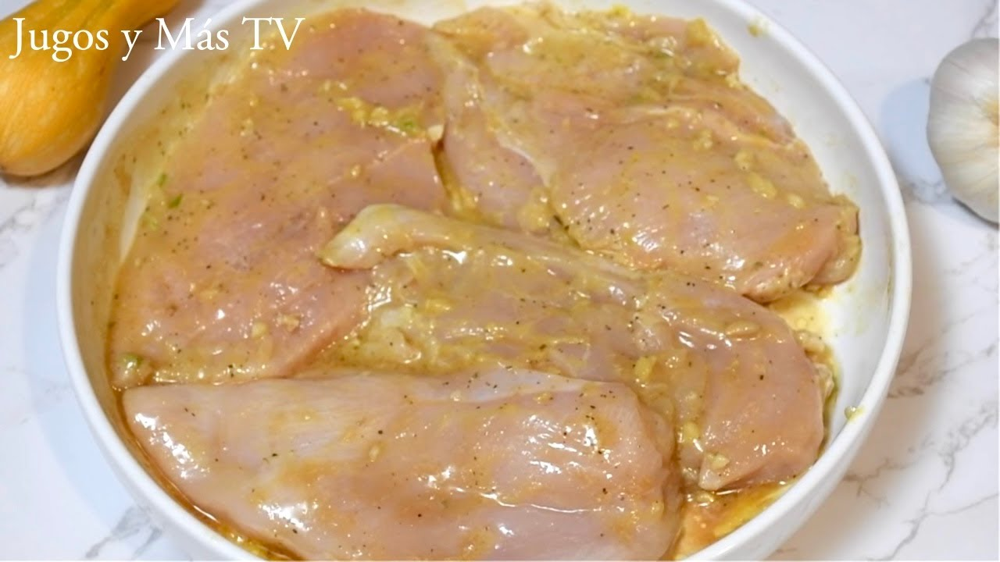
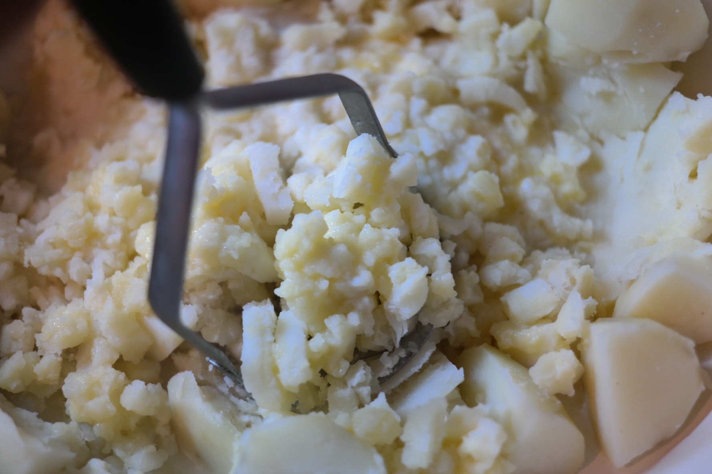

Regresar al menu
Pollo a la plancha con pure
Indice de Contenidos
Ingredientes
Los ingredientes que necesitaremos seran:
- Pechugas de pollo (1 por persona)
- Papas (2 medianas por persona)
- Sal y pimienta
- Ajo en polvo o limón (opcional)
- Manteca o leche (para el puré)
- Aceite de oliva o girasol
Paso a Paso
- Pelar y hervir las papas en agua con sal hasta que estén blandas (15-20 min).

- Condimentar el pollo con sal, pimienta y (opcional) un poco de ajo en polvo o jugo de limón

- Cocinar el pollo a la plancha con unas gotas de aceite, 5-6 minutos por lado hasta que esté dorado y cocido.

- el puré: pisar las papas hervidas, agregar un poco de manteca y leche hasta que quede suave. Sal a gusto.

- Servir el pollo con el puré al lado. ¡Listo!

resultado

Regresar al menu principal